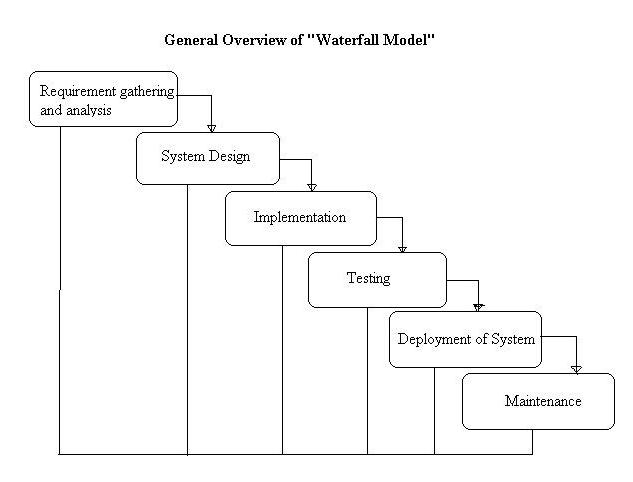

![Genislab]() Genislab Technologies
Genislab TechnologiesThe Waterfall Model was first Process Model to be introduced. It is also referred to as a linear-sequential life cycle model. It is very simple to understand and use. In a waterfall model, each phase must be completed fully before the next phase can begin. This type of software development model is basically used for the project which is small and there are no uncertain requirements.
At the end of each phase, a review takes place to determine if the project is on the right path and whether or not to continue or discard the project.
Table Of Contents
In this model software testing starts only after the development is complete. In waterfall model phases do not overlap.
Diagram of Waterfall model

Phases of Waterfall Model in Software Engineering
There are several phases in the waterfall model. They are briefly explained below. Let us understand the concept of Waterfall model with example of a banking application for illustrating the topic.
Let us assume that the Citibank is planning to have a new banking application developed and they have approached your organization in the 1990’s.
Requirements Gathering and Analysis
In this phase the requirements are gathered by the business analyst and they are analyzed by the team. Requirements are documented during this phase and clarifications can be sought.
The Business Analysts document the requirement based on their discussion with the customer.
Going through the requirements and analyzing them has revealed that the project team needs answers to the following questions which were not covered in the requirements document –
- Will the new banking application be used in more than one country?
- Do we have to support multiple languages?
- How many users are expected to use the application? etc
System Design
The architect and senior members of the team work on the software architecture, high level and low level design for the project.
It is decided that the banking application needs to have redundant backup and failover capabilities such that system is accessible at all times.
The architect creates the Architecture diagrams and high level / low level design documents.
Implementation
The development team works on coding the project.
They take the design documents / artifacts and ensure that their solution follows the design finalized by the architect.
Since the application is a banking application and security was a high priority in the application requirements, they implement several security checks, audit logging features in the application.
They also perform several other activities like a senior developer reviewing the other developers code for any issues. Some developers perform static analysis of the code.
Testing
The testing team tests the complete application and identifies any defects in the application.
These defects are fixed by the developers and the testing team tests the fixes to ensure that the defect is fixed.
They also perform regression testing of the application to see if any new defects were introduced.
Testers with banking domain knowledge were also hired for the project so that they could test the application based on the domain perspective.
Security testing teams were assigned to test the security of the banking application.
Deployment
The team builds and installs the application on the servers which were procured for the banking application.
Some of the high level activities include installing the OS on the servers, installing security patches, hardening the servers, installing web servers and application servers, installing the database etc.
They also co-ordinate with network and IT administrative teams etc to finally get the application up and running on the production servers.
Maintenance
During the maintenance phase, the team ensures that the application is running smoothly on the servers without any downtime.
Issues that are reported after going live are fixed by the team and tested by the testing team.
Examples of Waterfall Model
In the olden days, Waterfall model was used to develop enterprise applications like Customer Relationship Management (CRM) systems, Human Resource Management Systems (HRMS), Supply Chain Management Systems, Inventory Management Systems, Point of Sales (POS) systems for Retail chains etc.
Waterfall model was used significantly in the development of software till the year 2000. Even after the Agile manifesto was published in 2001, Waterfall model continued to be used by many organization till the last decade.
These days most project follow Agile Methodology, some form of Iterative model or one of the other models depending on their project specific requirement.
In the olden days, applications developed in Waterfall Model like CRM Systems, Supply Chain Management Systems etc would usually take a year or longer to develop.
With the evolution of technology, there were cases where large scale enterprise systems were developed over a period of 2 to 3 years but were redundant by the time they were completed. There were several reasons for this.
- By the time the applications were developed in C, C++ etc, new languages (relatively speaking) like Java, .Net etc would replace them with web based functionality.
- Even if the application was developed using a new technology, factors like more competitors entering the market, cheaper alternatives becoming available, better functionality using newer technologies, change in customers requirement etc. increase the risk of developing an application over several years.
However, there are some areas where Waterfall model was continued to be preferred.
- Consider a system where human life is on the line, where a system failure could result in one or more deaths.
- In some countries, such mishaps could lead to imprisonment for those who are accountable.
- Consider a system where time and money were secondary considerations and human safety was first.
In such situations, Waterfall model was the preferred approach.
- Development of Department Of Defense (DOD), military and aircraft programs followed Waterfall model in many organizations.
- This is because of the strict standards and requirements that have to be followed.
- In such industries, the requirements are known well in advance and contracts are very specific about the deliverable of the project.
- DOD Agencies typically considered Waterfall model to be compatible with their acquisition process and rigorous oversight process required by the government.
Having said that, even these industries are being disrupted by the use of Iterative model and Agile methodology by organizations like Space X and others.
Waterfall model was also used in banking, healthcare, control system for nuclear facilities, space shuttles etc
Advantages of waterfall model
- This model is simple and easy to understand and use.
- It is easy to manage due to the rigidity of the model – each phase has specific deliverables and a review process.
- In this model phases are processed and completed one at a time. Phases do not overlap.
- Waterfall model works well for smaller projects where requirements are clearly defined and very well understood.
Disadvantages of waterfall model
- Once an application is in the testing stage, it is very difficult to go back and change something that was not well-thought out in the concept stage.
- No working software is produced until late during the life cycle.
- High amounts of risk and uncertainty.
- Not a good model for complex and object-oriented projects.
- Poor model for long and ongoing projects.
- Not suitable for the projects where requirements are at a moderate to high risk of changing.
When to use the waterfall model
- This model is used only when the requirements are very well known, clear and fixed.
- Product definition is stable.
- Technology is understood.
- There are no ambiguous requirements
- Ample resources with required expertise are available freely
- The project is short.
In Waterfall model, very less customer interaction is involved during the development of the product. Once the product is ready then only it can be demonstrated to the end users.
Once the product is developed and if any failure occurs then the cost of fixing such issues are very high, because we need to update everything from document till the logic.
In today’s world, Waterfall model has been replaced by other models like iterative, agile etc.
Difference between: Waterfall Model vs Agile Model
There are many differences between Waterfall and Agile model as shown below.
| Waterfall Model | Agile Model |
| Planning – Waterfall model requires planning for long term which requires complete clarity in requirements | Planning in Agile projects is generally on a short term since the work product is delivered in 2 to 4 weeks |
| Project success is dependent on implementing the requirements closely | Project success is based on delivery of business value to the client |
| Waterfall projects are driven from the top of a projects hierarchy | Teams are self governing in an Agile project |
| Sequential planning with clearly defined milestone details and predictability are characteristics of Waterfall projects | Planning in Agile projects is iterative in nature and adapts to changing requirements |
| There are many roles in a Waterfall project and these projects can also have several levels of hierarchy | Agile projects teams have significantly lesser roles, for example Scrum teams can get by with only three roles |
| There is significant amount of communication with the user during requirements gathering (at the beginning) and testing (at the end) | There is a steady on-going communication with the user during the project |
| There is no much dependency on the end users during the development and other intermediate phases | There is significant dependency on the users, all the way through the lifetime of the project |
| Complete requirements are clearly documented to begin with | Requirements continue to develop over the lifetime of the project and are defined when they are needed, i.e, just in time |
| Team members with different roles have different responsibility levels | Equal responsibility is shared between the roles |
| Change control is strictly enforced and rigorous change control processes are followed. Thus change is discouraged and they do not respond well to change. | Agile projects are open to change, they accept them openly and respond well |
| Quality Control activities like Testing are performed towards the end of the project | Quality Control activities are performed throughout the project |
| The steps in the processes in Waterfall model are rigorously followed since this model is more process oriented | Agile model is more people oriented and lesser importance is placed on processes with the option to skip those processes whose value is low |
| Delivery of the project at the end is characterized by a big bang event | Working product features are delivered in each sprint of the project |
| It is difficult to measure the progress of the project in the middle of the project | Progress of the project can be easily measured since working features are delivered frequently |
| Progress of the project is generally reviewed with the team once a week | Progress of the project is reviewed with the team on a daily basis in the standup meeting |
Have you seen Waterfall model being used in your organization? Please share your experience in the comments below.
Also see:
What is Agile Model?
What is V-model?
What is Incremental model?
What is Spiral model?
What is Prototype model?
What is RAD model?
Other popular articles:
- What is Spiral model- advantages, disadvantages and when to use it?
- What is V-model- advantages, disadvantages and when to use it?
- What is Prototype model- advantages, disadvantages and when to use it?
- What are the Software Development Models?
- What are the Software Development Life Cycle (SDLC) phases?
nthng says
Where and when do we use it? (Give at least 5 specific situations for usage)
Kazoora. Justus says
This is very helpful
Sylwia says
this model is easy and fun if all expectations are well defined in the initial phase
Urooj says
water fall model can use for monitor traffic in different cities and the rush hours to guide their customers for the best routes in the city
Braimer says
I love this article it has helped me a lot
Akash kothari says
Why is the pure Waterfall model of software development not recommended for large-sale
software projects? Explain with the help of examples
Lena says
I’ve been a project manager in finance, aerospace and healthcare industries for some decades. Agile is best for Low Risk, Low complexity, tiny independent teams, tiny “projects” – Think changing the color of website or Content Management updates, marketing software changes etc. Or where you have tons of time, no deadlines and teams are experimenting as they go to build things. Scaled Agile has so much overhead and requires tons of money, armies of people and required meetings galore to work. SA was created to try to address the huge limitations of Agile – attempting to make Agile a methodology to use for big teams, big projects. Waterfall is used in High Risk, Highly Complex system with huge teams. Can be scaled up or down to met requirements. Keeps teams informed because of tollgates/milestones. Best for any mission critical system that actually has to work. Medical, Financial, Aerospace anything complex that has to work = waterfall or hybrids of waterfall – iterative, spiral. Something tiny, low risk, low complex where optics, speed, social interaction or politics is more important than the disciplined of professional software engineering = Agile.
Duni Anderson says
Very thank you for detailed comment!
Soreesh Sharma says
can you explain that how waterfall method will be used in corporate world
Suresh says
can i use this as my mini project submission
NAMETSO MALEME says
Thank you a lot for the information.it was well understood for my System Project Management level 4 portfolio building.
seragadeen says
when the waterfall model cannot be used
Charan says
Just the opposite of when it is used
mourine ruto says
Thanks for the information
Apahe says
Totally the best article I have ever read abt these software models. Keep it up. Frm student Bsc. Multimedia Tech & Animation.
Mfuranzima ghislain says
Thank you for give me more information about waterfall model
aidan says
big help, easy mark thank you budday
Paul Okeke says
Not a good model for complex and object-oriented projects.
This model can fix such requirement because in Water fall model, we are required to design each components before implementation thus waterfall model fits in for projects that also have to handle complex complex components etc.. perhaps i don’t understand what that statement means.
NadV says
can i know when this is posted?
Khan Saab says
Can you explain with case studies ?
Brillianbt says
thnkx a lot about this infomation
Progress Adhikari says
very much applicable for my project. thank you for this
Chirwa kings says
So reliable information
Arsalan says
Wrong Diagram
ISTQB Guide says
This diagram is as per ISTQB certification and is correct. There may be several variations of this diagram on other websites but we cannot vouch for their accuracy.
I. Manoj Withanage says
It is very use full information , to follow My Degree.
sajjad yousafzai says
that’s great thank you so much for giving me these information.
Muzamil Hussain says
very ease content to everyone
lecias kwirirai says
its usefull
Tade gemeda says
Nice content
Nann Zin Moe says
Thanks a lot for such a helpful page
Prashant challa says
can i use Waterfall model in Online jewellery shopping system?
TestTech says
Yes, The waterfall model in online jewellery shopping system can be implemented as there will be clear requirements on the functionality. The online shopping systems most of the time have verywell defined logic. There is no need for the demo to the end user until the system is built with full functionality working.
ANTONIO PARKS says
What would be the #1 Security Risk that threatens Water Fall Models?
ANTONIO PARKS says
Thank you so much. Helped with class immeasurably
CS Student says
Thank you for a such kind info
Pakalapati.Issac Paul Son says
tnq guys good work and given good information for students……
Am says
Tq very much it mean a lot for me
Letsapo says
Thnk you by helping me and others as though they are useful
Pura says
Thanks guys! This was very useful.
Makardhwaj says
Too fruitful for exams as well as practical( software development purposes)
Lyson kondwani says
This model is applicable for small projects not big projects
rana fakhar says
but way?